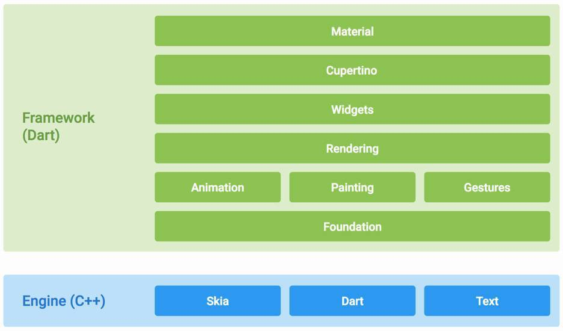

Why to chose Flutter?
As a Software Engineering student I was finding a carrier in tech field and I am fascinated by the mobile technologies. There were wide variety of platform to choose when I started to learn but from all among those I chose flutter. Flutter is the newest UI framework by google which helps to develop the cross platform mobile application which are fast, well designed and much interactive.
It is an open-source framework based the Dart programming language. In flutter native looking apps for both Android and IOS can be built from the same code base. It is in development phase and is developing rapidly. Here are some of the reasons why I choose flutter over other mobile development frameworks:

Seven Reasons why you should choose Flutter:
- It overcomes the traditional cross platform approach by giving a framework that can build both Android and IOS app from same code base.
- Increase the productivity for developers. It provides a new yet very important feature "hot reload" also known as "hot restart" which emulates the program without having to load the gradle every time.
- Greater Performance: Since Flutter does not use the OEM widgets, there is no JavaScript bridge for reactive views thus the app performance is noticeably faster than other non-Flutter apps.
- Single Code Base for frontend and Backend: Unlike other frameworks Flutter uses same code base to do both the jobs. Dart has been built to ease the developers to do both frontend and backend.
- Flutter is an open-source framework which means there is unlimited possibilities to customize almost everything from material design and cupertino widgets to animations and gestures.
- Straightforward Co-ordination with firebase: Firebase provides out of the box support for lots of services such as cloud storage, cloud functions, real time databases, hosting, authentication and a whole lot more. Your infrastructure is instantly serverless, redundant and scalable. This means you don’t have to spend a lot of time and resources building the backend.
- Flutter is a very powerful design experience. It helps to produce the smooth and crisp apps.
Technologies
Build
- Beautiful app UIs
* Rich 2D GPU-accelerated APIs
* Reactive framework
* Animation/motion APIs
* Material Components and Cupertino widgets
- Fluid coding experience
* Sub-second, stateful hot reload
* IntelliJ: refactor, code completion, etc
* Dart language and core libs
* Package manager
- Full-features apps
* Interop with mobile OS APIs & SDKs
* Maven/Java
* Cocoapods/ObjC/Swift
Optimize
- Test
* Unit testing
* Integration testing
* On-device testing
- Debug
* IDE debugger
* Web-based debugger
* async/await aware
* Expression evaluator
- Profile
* Timeline
* CPU and memory
* In-app perf charts
Deploy
- Compile
* Native ARM code
* Dead code elimination
- Distribution
* App Store
* Play Store